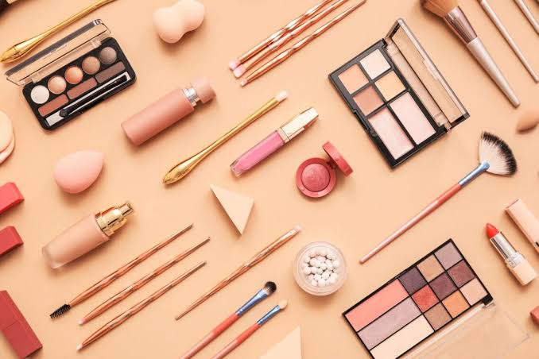
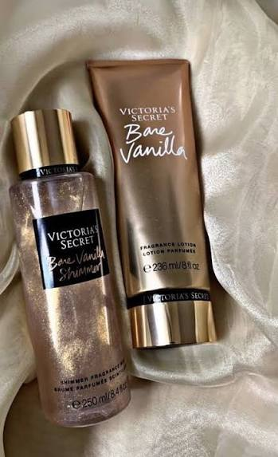
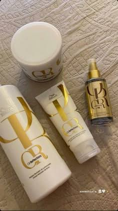
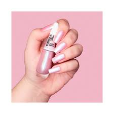
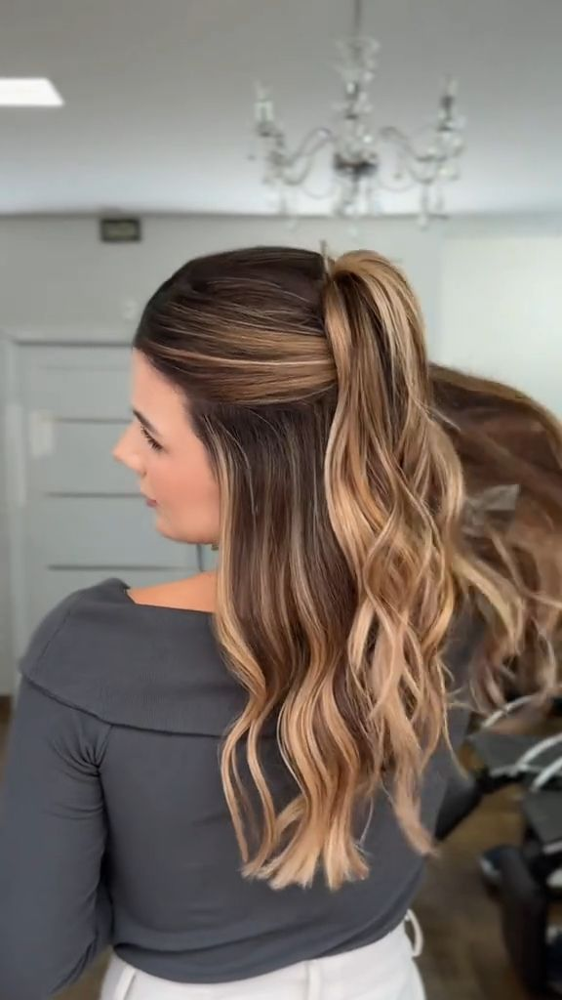

Meu primeiro post
Por: Ana Clara
Boas-vindas ao meu novo blog! Aqui vou ajudar as meninas a se sentirem pertencentes e sentirem que não estão sozinhas.
Vou compartilhar diversas dicas do mundo feminino!.
Por: Ana Clara
Boas-vindas ao meu novo blog! Aqui vou ajudar as meninas a se sentirem pertencentes e sentirem que não estão sozinhas.

Por: Ana Clara
Para fazer a maquiagem durar mais, limpe e hidrate bem a pele, use um primer adequado, aplique camadas finas de produtos, sele a pele com pó solto, use itens à prova d'água e finalize com uma bruma ou spray fixador.
Fonte: Jornal

Por: Ana Clara.
Para ficar cheirosa o dia todo, o segredo é criar camadas de fragrância. Comece com uma boa higiene no banho usando sabonete em barra e líquido, aplique óleo corporal e hidratante na pele úmida para fixar o aroma, e finalize borrifando perfume nos pontos de pulsação sem esfregar..
Fonte: TecMundo

Por: Ana Clara
A frequência das etapas depende do nível de dano do cabelo. Um cronograma padrão assume 3 lavagens por semana, sempre com um intervalo mínimo de 48 horas entre os tratamentos.
Fonte: TechTudo

Por: Ana Clara
A esmaltação começa muito antes de abrir o vidrinho de esmalte. Uma base mal preparada faz o esmalte descascar em dois dias.Afaste, não remova tudo: Em vez de tirar bifes com o alicate, use um amolecedor de cutículas e empurre-as suavemente com uma espátula. Isso evita linhas fundas e machucados.Polimento sutil: Use o lado mais fino de uma lixa bloco para nivelar a superfície da unha. Isso remove imperfeições e descamações.Limpeza com álcool: Antes de começar, passe um algodão com álcool 70% ou acetona nas unhas. Isso remove a oleosidade natural e resíduos de cremes, fazendo o esmalte grudar muito melhor.
Fonte: Educa Mais Brasil

Por: Ana Clara.
Coque alto ou baixo bem alinhado: Use um pouco de gel, pomada ou creme para prender os fios no alto da cabeça, escondendo o aspecto oleoso da raiz. CLAUDIA - o sentido feminino +1 Coque samurai (metade preso, metade solto): Ótimo para prender a parte da franja que costuma ficar mais suja, mantendo o restante do cabelo prático. Guia da Semana Trança boxeadora ou embutida: Prende firmemente os fios da raiz e evita que o aspecto oleoso fique evidente. Guia da Semana Uso de acessórios: Tiaras, faixas e turbantes ajudam a cobrir a raiz do cabelo de forma rápida e estilosa.
Fonte: BBC
Por:Ana Clara
Cinza + Rosa Antigo: Cria um visual delicado e feminino sem parecer infantil.Verde Musgo + Caramelo: Uma mistura de tons terrosos rica e elegante para qualquer estação.Azul Marinho + Branco: Um clássico atemporal que transmite limpeza e sofisticação imediata.Tom sobre Tom (Monocromático): Usar intensidades diferentes da mesma cor (como marrom escuro com bege) traz profundidade ao look
E aí, qual sua combinação favorita?